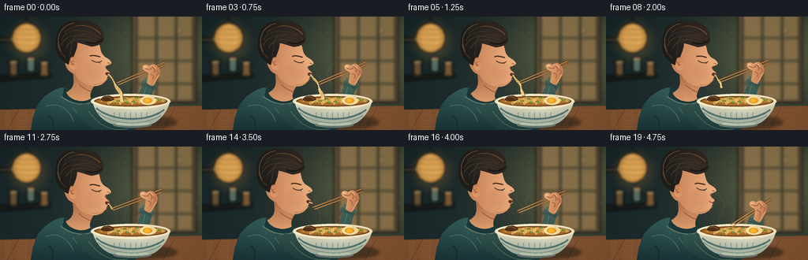
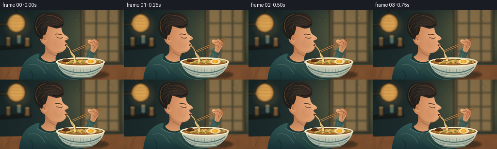

CODING AGENTS AS PIXEL WORLD MODELS
traex/GPT-6.1-Sol · motion_rationality_0000
点击播放 · 原生 RGB 像素
逐轮保存的候选
回放视频、检查图与代码变化。
每份候选均可单独播放。实际图片检查记录在下方工具轨迹中。
候选 01播放与检查图
点击播放 · 原生 RGB 像素

展开代码变化
--- 上一保存版本
+++ 本次保存版本
@@ -0,0 +1,332 @@
+"""Procedural, supersampled RGB animation: a quiet mouthful of hot ramen."""
+from pathlib import Path
+import math
+import json
+import numpy as np
+from PIL import Image, ImageDraw, ImageFilter
+import artifact_io
+
+ROOT = Path(__file__).resolve().parent
+SPEC = json.loads((ROOT / 'task_spec.json').read_text())
+W, H = SPEC['width'], SPEC['height']
+S = 4
+SZ = (W*S,H*S)
+rng = np.random.default_rng(83)
+
+def bez(points, n=35):
+ p=np.asarray(points,float)
+ if len(p)==4:
+ return [tuple((1-t)**3*p[0]+3*(1-t)**2*t*p[1]+3*(1-t)*t*t*p[2]+t**3*p[3]) for t in np.linspace(0,1,n)]
+ return list(points)
+
+def path(start, curves):
+ out=[start]; prev=start
+ for c in curves:
+ out.extend(bez([prev,*c])[1:]); prev=c[-1]
+ return out
+
+def sc(points): return [(round(x*S),round(y*S)) for x,y in points]
+def line(im,pts,fill,width=1):
+ ImageDraw.Draw(im).line(sc(pts),fill=fill,width=max(1,round(width*S)),joint='curve')
+def poly(im,pts,fill): ImageDraw.Draw(im).polygon(sc(pts),fill=fill)
+def ellipse(im, box, fill, outline=None, width=1):
+ ImageDraw.Draw(im).ellipse(tuple(round(z*S) for z in box),fill=fill,outline=outline,width=round(width*S))
+def curve(im,points,color,width=1): line(im,bez(points),color,width)
+
+def shaded(im,points,top,bottom,axis='y',light=0):
+ mask=Image.new('L',SZ); ImageDraw.Draw(mask).polygon(sc(points),fill=255)
+ pp=np.asarray(points)
+ yy,xx=np.mgrid[0:H*S,0:W*S].astype(float)/S
+ low=pp[:,1].min() if axis=='y' else pp[:,0].min()
+ high=pp[:,1].max() if axis=='y' else pp[:,0].max()
+ a=np.clip(((yy if axis=='y' else xx)-low)/max(1,high-low),0,1)
+ a=a[...,None]
+ rgb=np.array(top)*(1-a)+np.array(bottom)*a
+ if light:
+ bump=np.exp(-((xx-pp[:,0].mean()-8)**2/550+(yy-pp[:,1].mean()+9)**2/320))
+ rgb+=light*bump[...,None]
+ im.paste(Image.fromarray(np.uint8(np.clip(rgb,0,255))), (0,0),mask)
+
+def soft_ellipse(im,box,color,blur=3):
+ layer=Image.new('RGBA',SZ); ellipse(layer,box,color)
+ im.alpha_composite(layer.filter(ImageFilter.GaussianBlur(blur*S)))
+
+def smooth(t): return max(0,min(1,t))**2*(3-2*max(0,min(1,t)))
+
+# A softly focused ramen shop. Everything here is drawn, not sourced.
+yy,xx=np.mgrid[0:H*S,0:W*S].astype(float)/S
+amb=np.exp(-((xx-215)**2/7900+(yy-47)**2/6000))
+base=np.empty((H*S,W*S,3))
+for k,(dark,glow) in enumerate([(25,68),(40,55),(42,22)]):
+ base[:,:,k]=dark+glow*amb+5*yy/H
+background=Image.fromarray(np.uint8(base)).convert('RGBA')
+back=Image.new('RGBA',SZ)
+# wall trim and shoji panel
+poly(back,[(167,0),(249,0),(249,109),(167,109)],(99,80,56,255))
+poly(back,[(172,0),(245,0),(245,105),(172,105)],(139,115,76,255))
+for x in [173,198,223,245]: line(back,[(x,0),(x,106)],(61,60,46,255),3)
+for y in [27,56,85]: line(back,[(170,y),(247,y)],(70,67,48,255),2.5)
+poly(back,[(0,75),(64,71),(64,77),(0,82)],(27,29,25,255))
+poly(back,[(0,27),(51,26),(51,30),(0,32)],(64,58,42,255))
+# jars and blurred ceramics on back shelves
+for x,y,c in [(12,56,(108,84,52,255)),(34,52,(92,116,107,255)),(51,57,(122,89,52,255))]:
+ ImageDraw.Draw(back).rounded_rectangle((x*S,y*S,(x+10)*S,(y+18)*S),radius=3*S,fill=c)
+ ellipse(back,(x-1,y-1,x+11,y+3),(166,139,91,255))
+# lantern with internal glow, top left
+line(back,[(33,0),(33,9)],(35,32,27,255),1.5)
+ellipse(back,(15,8,52,46),(213,151,75,255))
+ellipse(back,(21,10,46,43),(238,179,93,255))
+for y in [15,21,28,35,40]: curve(back,[(16,y),(27,y+2),(43,y+2),(51,y)],(177,115,53,150),.65)
+background.alpha_composite(back.filter(ImageFilter.GaussianBlur(1.7*S)))
+soft_ellipse(background,(7,3,65,60),(255,183,81,37),7)
+for x,y,r in [(158,20,3),(227,17,4),(250,72,3),(10,98,2)]:
+ soft_ellipse(background,(x-r,y-r,x+r,y+r),(252,207,132,70),2.5)
+# tabletop
+poly(background,[(0,118),(256,113),(256,144),(0,144)],(128,81,48,255))
+for y in np.linspace(120,146,14):
+ curve(background,[(0,y),(74,y-2),(180,y+1),(256,y-4)],(168,111,63,65),.5)
+for x in [24,103,221]: line(background,[(x,117),(x-15,144)],(80,51,32,65),.55)
+soft_ellipse(background,(106,125,224,143),(32,32,24,130),2)
+# Static painterly paper-like grain, very subtle and temporally fixed.
+gr=np.random.default_rng(3).normal(0,.65,(H*S,W*S,1))
+bga=np.asarray(background).copy(); bga[:,:,:3]=np.uint8(np.clip(bga[:,:,:3].astype(float)+gr,0,255)); background=Image.fromarray(bga)
+
+
+def body(im, shift, hand):
+ outline=path((78,90),[
+ ((65,93),(48,105),(44,121)),
+ ((40,131),(40,141),(38,148)),
+ ((69,151),(115,152),(143,146)),
+ ((144,132),(133,116),(120,105)),
+ ((106,94),(92,92),(78,90))])
+ shaded(im,outline,(51,91,87),(24,50,54),light=7)
+ # collar surrounding neck
+ poly(im,[(81,91),(98,91),(118,99),(112,111),(96,112),(79,103)],(27,56,58,255))
+ curve(im,[(77,101),(91,112),(110,115),(121,105)],(88,116,104,255),1.7)
+ curve(im,[(58,114),(73,108),(85,115),(93,132)],(82,110,99,255),1)
+ curve(im,[(61,125),(69,131),(68,140),(65,145)],(20,47,50,255),1.6)
+ curve(im,[(92,115),(100,128),(112,138),(126,144)],(74,104,94,255),1.1)
+ # Upper arm, elbow, and forearm return toward chopstick hand.
+ hx,hy=hand
+ arm=path((104,111),[
+ ((121,108),(132,131),(152,133)),
+ ((164,133),(175,100),(hx-11,hy+12)),
+ ((hx-7,hy+14),(hx+1,hy+18),(hx+2,hy+23)),
+ ((184,112),(182,141),(163,150)),
+ ((143,156),(111,140),(99,126)),
+ ((95,120),(99,113),(104,111))])
+ shaded(im,arm,(70,105,95),(27,57,57),light=4)
+ curve(im,[(112,120),(130,145),(150,145),(162,142)],(76,107,95,255),1)
+ curve(im,[(173,121),(179,104),(185,hy+27),(hx-8,hy+17)],(91,120,103,255),1)
+ # knit cuff
+ cuff=path((hx-13,hy+15),[
+ ((hx-8,hy+12),(hx-1,hy+15),(hx+4,hy+20)),
+ ((hx+3,hy+23),(hx+1,hy+26),(hx-1,hy+27)),
+ ((hx-6,hy+23),(hx-11,hy+23),(hx-16,hy+21)),
+ ((hx-16,hy+19),(hx-15,hy+16),(hx-13,hy+15))])
+ shaded(im,cuff,(92,117,100),(46,77,73))
+ for j in range(6):
+ x=hx-13+j*2.4
+ line(im,[(x,hy+16+j*.5),(x-2,hy+22+j*.6)],(35,66,63,190),.55)
+
+
+def head(im,dx,dy,finish):
+ def tr(pts): return [(x+dx,y+dy) for x,y in pts]
+ # The turned neck connects to the same shoulders throughout the motion.
+ neck=path((92,70),[
+ ((94,83),(95,90),(84,96)),
+ ((87,105),(103,111),(115,104)),
+ ((112,96),(119,87),(126,81)),
+ ((116,73),(103,70),(92,70))])
+ shaded(im,tr(neck),(164,101,66),(223,157,109),light=7)
+ curve(im,tr([(100,86),(105,90),(111,94),(116,95)]),(142,86,60,255),1)
+ skin=path((88,27),[
+ ((99,16),(115,21),(123,31)),
+ ((128,37),(126,43),(130,48)),
+ ((132,52),(139,53),(141,58)),
+ ((142,61),(135,61),(134,64)),
+ ((133,67),(137,68),(139,71)),
+ ((138,73),(134,74),(136,76)),
+ ((135,84),(126,89),(118,88)),
+ ((107,87),(99,81),(95,73)),
+ ((81,69),(77,53),(88,27))])
+ shaded(im,tr(skin),(201,131,88),(232,170,122),axis='x',light=9)
+ # cheek, jaw and nose reflected light
+ curve(im,tr([(136,62),(132,63),(133,65),(135,66)]),(160,95,64,255),.7)
+ curve(im,tr([(137,78),(132,85),(124,87),(118,86)]),(169,104,71,255),.6)
+ soft_ellipse(im,(112+dx,58+dy,129+dx,77+dy),(195,102,75,32),2.7)
+ # ear
+ ear=path((93,48),[((83,43),(83,58),(89,65)),((93,70),(99,65),(98,58)),((98,53),(96,49),(93,48))])
+ shaded(im,tr(ear),(200,129,85),(223,157,108))
+ curve(im,tr([(92,52),(86,50),(88,59),(94,61)]),(154,87,58,255),.9)
+ curve(im,tr([(94,56),(90,57),(90,60),(92,62)]),(176,99,65,255),.65)
+ # closed/downward eyes, strongly readable expression
+ curve(im,tr([(116,55),(120,58),(125,59),(129,56)]),(62,44,32,255),1.05)
+ curve(im,tr([(114,50),(118,48),(123,50),(127,51)]),(75,49,33,255),1.6)
+ line(im,tr([(125,58),(127,59)]),(67,46,31,255),.65)
+ curve(im,tr([(136,59),(137,58),(139,59),(139,60)]),(113,69,46,255),.6)
+ # small pursed, open slurping mouth, not an unchanging smile
+ if finish<.7:
+ ellipse(im,(133.6+dx,70.5+dy,139.3+dx,74.5+dy),(90,47,34,255))
+ curve(im,tr([(134,71),(136,69.9),(138,70.7),(139,71.8)]),(175,94,72,255),.6)
+ curve(im,tr([(134,75),(136,76),(138,75),(139,73)]),(240,171,124,255),.7)
+ else:
+ curve(im,tr([(132,72),(134,74),(137,73.9),(139,72.7)]),(127,65,48,255),.85)
+ curve(im,tr([(133,75),(135,76),(136,75.8),(137,75)]),(241,177,133,255),.65)
+ # Dense swept hair mass, with distinct overlapping locks.
+ hair=path((87,61),[
+ ((75,56),(68,43),(71,29)),
+ ((72,9),(86,3),(103,6)),
+ ((119,2),(132,15),(131,27)),
+ ((132,34),(125,37),(116,38)),
+ ((111,37),(104,34),(98,33)),
+ ((98,40),(95,46),(93,51)),
+ ((88,49),(88,56),(87,61))])
+ shaded(im,tr(hair),(29,29,27),(47,35,29),axis='x',light=11)
+ # warm rim at left of haircut
+ curve(im,tr([(77,44),(68,24),(80,10),(94,8)]),(102,79,50,255),1.1)
+ locks=[[(78,30),(82,16),(102,14),(123,24)],[(77,37),(83,20),(104,22),(122,29)],
+ [(84,39),(91,25),(109,27),(122,33)],[(91,33),(92,19),(113,20),(128,28)],
+ [(82,20),(96,6),(118,10),(128,22)],[(73,34),(75,47),(81,49),(83,52)],
+ [(91,33),(91,41),(88,45),(89,49)]]
+ for k,l in enumerate(locks): curve(im,tr(l),(73+k%3*6,56+k%3*3,39,255),.65)
+ curve(im,tr([(96,12),(109,9),(122,16),(127,22)]),(118,83,51,255),.7)
+ curve(im,tr([(108,32),(115,35),(126,34),(130,28)]),(25,24,23,255),1.8)
+
+
+def steam(im,t):
+ layer=Image.new('RGBA',SZ)
+ for j in range(4):
+ x=146+j*15
+ phase=(t*.31+j*.24)%1
+ # semi-transparent continuous rising ribbons; widths diffuse upward
+ pts=[]
+ for u in np.linspace(0,1,65):
+ y=103-46*u
+ px=x+math.sin(u*7-t*1.9+j*1.4)*(2+4*u)+math.sin(t*.7+j)*u*4
+ pts.append((px,y))
+ for k in range(len(pts)-1):
+ u=k/(len(pts)-1)
+ alpha=int(41*(1-u)**.7*(.7+.3*math.sin(phase*math.tau+u*2)**2))
+ line(layer,pts[k:k+2],(241,230,205,alpha),1.2+2.1*u)
+ im.alpha_composite(layer.filter(ImageFilter.GaussianBlur(.9*S)))
+
+
+def bowl(im):
+ # Ceramic body in front of the arm.
+ outline=path((117,107),[
+ ((119,119),(129,134),(145,137)),
+ ((158,141),(185,141),(197,134)),
+ ((207,127),(214,116),(215,107)),
+ ((195,104),(133,103),(117,107))])
+ shaded(im,outline,(236,225,193),(150,166,154),light=18)
+ ellipse(im,(143,134,192,141),(106,122,113,255))
+ ellipse(im,(146,133.5,190,138.5),(190,199,176,255))
+ # broad highlight and blue-gray painted stripes
+ curve(im,[(122,116),(139,132),(185,136),(208,118)],(81,117,113,255),2.3)
+ curve(im,[(124,121),(139,137),(182,140),(204,125)],(108,138,126,255),.9)
+ for j in range(7):
+ x=145+j*6.9
+ curve(im,[(x,122),(x-2,124),(x+1,126),(x-1,129)],(87,121,112,210),.6)
+ # The elliptical rim and dark soup establish a horizontal bowl.
+ ellipse(im,(115,98,216,117),(245,231,193,255))
+ ellipse(im,(119,101,212,114),(100,60,30,255))
+ ellipse(im,(121,102,210,113),(155,95,40,255))
+ ellipse(im,(124,103,207,112),(175,112,44,255))
+ # nests of golden noodles within the soup
+ for j in range(15):
+ x=129+(j*13)%67; y=105+(j%4)*1.4
+ curve(im,[(x,y+2),(x-8,y-3),(x+13,y-4),(x+16,y+1)],(228,186,90,255),.9)
+ curve(im,[(x,y+2.8),(x-6,y),(x+11,y-3),(x+14,y+1)],(247,209,116,255),.45)
+ # egg half, mushroom and green onions
+ ellipse(im,(177,101,198,112),(247,226,166,255))
+ ellipse(im,(181,103,193,110),(238,159,41,255))
+ ellipse(im,(183,104,190,109),(253,187,42,255))
+ mushroom=path((127,106),[((131,98),(140,98),(145,105)),((140,108),(133,108),(127,106))])
+ poly(im,mushroom,(80,47,27,255))
+ curve(im,[(130,103),(136,100),(140,103),(142,105)],(152,98,48,255),.7)
+ for x,y in [(158,104),(169,108),(150,107),(202,106),(161,109),(173,103),(144,110)]:
+ ellipse(im,(x-2,y-1,x+2,y+1),(69,111,51,255))
+ ellipse(im,(x-.8,y-.5,x+.8,y+.5),(179,190,79,255))
+ curve(im,[(118,108),(135,118),(197,120),(213,109)],(255,241,205,255),1.7)
+ curve(im,[(119,104),(130,99),(150,98.7),(165,99)],(255,246,220,255),.8)
+
+
+def noodles(im,t,dx,dy):
+ p=smooth(t/3.75)
+ if t>=4.0: return
+ # Ends climb all the way into the lips: material is consumed, not stretched.
+ mouth=np.array([137+dx,73+dy])
+ end=np.array([155-16*p,109-35*p+dy*p])
+ amount=max(0,1-p)
+ for j in range(4):
+ pts=[]
+ for u in np.linspace(0,1,60):
+ q=mouth*(1-u)+end*u
+ q[0]+=(3.2*math.sin(u*math.pi)+1.4*math.sin(u*10-t*3+j*.5)*math.sin(u*math.pi))*amount
+ q[0]+=(j-1.5)*1.2*(.3+.7*u)*max(.4,amount)
+ pts.append(tuple(q))
+ line(im,[(x+.5,y+.5) for x,y in pts],(116,72,33,255),1.5)
+ line(im,pts,(245,207,124,255),1.02)
+ line(im,[(x-.18,y-.12) for x,y in pts],(255,227,163,255),.32)
+
+
+def sticks_and_hand(im,tip,hand):
+ tx,ty=tip; hx,hy=hand
+ # Two tapered wooden chopsticks, separated at the eating tips.
+ for i in range(2):
+ end=(hx+13,hy-8+i*4)
+ tip_i=(tx+i*1.8,ty+i*2.5)
+ poly(im,[(tip_i[0],tip_i[1]-.55),(end[0],end[1]-1.2),(end[0]+.2,end[1]+1),(tip_i[0],tip_i[1]+.6)],(99,53,27,255))
+ line(im,[tip_i,end],(197,139,76,255),1.05)
+ line(im,[(tip_i[0]+2,tip_i[1]-.15),(end[0],end[1]-.4)],(232,178,108,255),.3)
+ # Wrist and curled fingers hold the sticks at their back thirds.
+ palm=path((hx-9,hy+18),[
+ ((hx-8,hy+12),(hx-7,hy+9),(hx-7,hy+5)),
+ ((hx-13,hy+3),(hx-15,hy),(hx-14,hy-3)),
+ ((hx-13,hy-5),(hx-9,hy-6),(hx-6,hy-3)),
+ ((hx-3,hy-6),(hx+1,hy-7),(hx+4,hy-3)),
+ ((hx+9,hy),(hx+9,hy+7),(hx+5,hy+12)),
+ ((hx+3,hy+16),(hx+1,hy+19),(hx-1,hy+22)),
+ ((hx-4,hy+22),(hx-7,hy+20),(hx-9,hy+18))])
+ shaded(im,palm,(231,166,111),(184,113,73),axis='x',light=12)
+ curve(im,[(hx-13,hy-2),(hx-9,hy+2),(hx-4,hy+2),(hx-3,hy-1)],(146,83,53,255),.65)
+ curve(im,[(hx-4,hy-3),(hx,hy-2),(hx+2,hy+2),(hx,hy+5)],(146,83,54,255),.65)
+ curve(im,[(hx+2,hy+2),(hx+6,hy+3),(hx+6,hy+7),(hx+3,hy+9)],(148,86,57,255),.6)
+ curve(im,[(hx-5,hy+7),(hx-1,hy+7),(hx+1,hy+11),(hx-2,hy+13)],(158,94,59,255),.65)
+ # Short thumbnail and reflected light on knuckles
+ ellipse(im,(hx-13,hy-3.5,hx-9,hy-.7),(244,187,140,255))
+ curve(im,[(hx-5,hy-3),(hx-1,hy-4),(hx+1,hy-2),(hx+2,hy)],(251,191,136,255),.75)
+ curve(im,[(hx+6,hy+8),(hx+1,hy+17),(hx,hy+19),(hx-1,hy+20)],(246,183,126,255),.65)
+
+
+def frame(i):
+ t=i/SPEC['fps']
+ p=smooth(t/3.75); settle=smooth((t-3.7)/1.05)
+ # A small initial leaning-in followed by a gentle recovery, not a looping nod.
+ dx=1.3*math.sin(p*math.pi)-1.4*p
+ dy=2.3*math.sin(p*math.pi)-2.8*p
+ tip=(148-8*p+18*settle,84-7*p+22*settle)
+ hand=(195-4*p+5*settle,66-5*p+13*settle)
+ im=background.copy()
+ body(im,dy,hand)
+ steam(im,t)
+ head(im,dx,dy,settle)
+ bowl(im)
+ noodles(im,t,dx,dy)
+ sticks_and_hand(im,tip,hand)
+ # subtle small steam wisps in the foreground, never hiding the action
+ wis=Image.new('RGBA',SZ)
+ curve(wis,[(194,105),(188+math.sin(t)*2,98),(198,92),(194+math.sin(t*1.3)*3,86)],(248,236,214,40),1.25)
+ im.alpha_composite(wis.filter(ImageFilter.GaussianBlur(1.2*S)))
+ # Filmic vignette, fixed over time.
+ ar=np.asarray(im.convert('RGB')).astype(float)
+ v=1-.115*((xx-133)**2/(153**2)+(yy-76)**2/(113**2))
+ ar*=np.clip(v,.77,1)[...,None]
+ im=Image.fromarray(np.uint8(np.clip(ar,0,255)))
+ return np.asarray(im.resize((W,H),Image.Resampling.LANCZOS))
+
+if __name__=='__main__':
+ frames=np.stack([frame(i) for i in range(SPEC['frames'])]).astype(np.uint8)
+ artifact_io.save(frames,ROOT)
+ print('Saved',frames.shape,'RGB video at',SPEC['fps'],'fps')
候选 02播放与检查图
点击播放 · 原生 RGB 像素


展开代码变化
--- 上一保存版本
+++ 本次保存版本
@@ -306,7 +306,16 @@
# A small initial leaning-in followed by a gentle recovery, not a looping nod.
dx=1.3*math.sin(p*math.pi)-1.4*p
dy=2.3*math.sin(p*math.pi)-2.8*p
- tip=(148-8*p+18*settle,84-7*p+22*settle)
+ # Place the chopstick tip on the actual noodle curve as the bite shortens.
+ # This keeps the grasp mechanically connected, rather than letting the
+ # utensils hover alongside the strands during the last part of the sip.
+ u=.38
+ mx,my=137+dx,73+dy
+ ex,ey=155-16*p,109-35*p+dy*p
+ tipx=mx*(1-u)+ex*u
+ tipx+=(3.2*math.sin(u*math.pi)+1.4*math.sin(u*10-t*3+.5)*math.sin(u*math.pi))*(1-p)
+ tipy=my*(1-u)+ey*u
+ tip=(tipx+22*settle,tipy+29*settle)
hand=(195-4*p+5*settle,66-5*p+13*settle)
im=background.copy()
body(im,dy,hand)
候选 03播放与检查图
可观测工具轨迹
实际执行的命令与返回图片。
命令 1exit 0
/bin/bash -lc 'ls -la && cat prompt.txt && cat GENERATION_RULES.md && cat task_spec.json'
命令 2exit 0
/bin/bash -lc "cat artifact_io.py && python - <<'PY'
import PIL,numpy
print('PIL',PIL.__version__)
PY"命令 3exit 0
/bin/bash -lc "cat > generate.py <<'PY'
\"\"\"Procedural, supersampled RGB animation: a quiet mouthful of hot ramen.\"\"\"
from pathlib import Path
import math
import json
import numpy as np
from PIL import Image, ImageDraw, ImageFilter
import artifact_io
ROOT = Path(__file__).resolve().parent
SPEC = json.loads((ROOT / 'task_spec.json').read_text())
W, H = SPEC['width'], SPEC['height']
S = 4
SZ = (W*S,H*S)
rng = np.random.default_rng(83)
def bez(points, n=35):
p=np.asarray(points,float)
if len(p)==4:
return [tuple((1-t)**3*p[0]+3*(1-t)**2*t*p[1]+3*(1-t)*t*t*p[2]+t**3*p[3]) for t in np.linspace(0,1,n)]
return list(points)
def path(start, curves):
out=[start]; prev=start
for c in curves:
out.extend(bez([prev,*c])[1:]); prev=c[-1]
return out
def sc(points): return [(round(x*S),round(y*S)) for x,y in points]
def line(im,pts,fill,width=1):
ImageDraw.Draw(im).line(sc(pts),fill=fill,width=max(1,round(width*S)),joint='curve')
def poly(im,pts,fill): ImageDraw.Draw(im).polygon(sc(pts),fill=fill)
def ellipse(im, box, fill, outline=None, width=1):
ImageDraw.Draw(im).ellipse(tuple(round(z*S) for z in box),fill=fill,outline=outline,width=round(width*S))
def curve(im,points,color,width=1): line(im,bez(points),color,width)
def shaded(im,points,top,bottom,axis='y',light=0):
mask=Image.new('L',SZ); ImageDraw.Draw(mask).polygon(sc(points),fill=255)
pp=np.asarray(points)
yy,xx=np.mgrid[0:H*S,0:W*S].astype(float)/S
low=pp[:,1].min() if axis=='y' else pp[:,0].min()
high=pp[:,1].max() if axis=='y' else pp[:,0].max()
a=np.clip(((yy if axis=='y' else xx)-low)/max(1,high-low),0,1)
a=a[...,None]
rgb=np.array(top)*(1-a)+np.array(bottom)*a
if light:
bump=np.exp(-((xx-pp[:,0].mean()-8)**2/550+(yy-pp[:,1].mean()+9)**2/320))
rgb+=light*bump[...,None]
im.paste(Image.fromarray(np.uint8(np.clip(rgb,0,255))), (0,0),mask)
def soft_ellipse(im,box,color,blur=3):
layer=Image.new('RGBA',SZ); ellipse(layer,box,color)
im.alpha_composite(layer.filter(ImageFilter.GaussianBlur(blur*S)))
def smooth(t): return max(0,min(1,t))**2*(3-2*max(0,min(1,t)))
# A softly focused ramen shop. Everything here is drawn, not sourced.
yy,xx=np.mgrid[0:H*S,0:W*S].astype(float)/S
amb=np.exp(-((xx-215)**2/7900+(yy-47)**2/6000))
base=np.empty((H*S,W*S,3))
for k,(dark,glow) in enumerate([(25,68),(40,55),(42,22)]):
base[:,:,k]=dark+glow*amb+5*yy/H
background=Image.fromarray(np.uint8(base)).convert('RGBA')
back=Image.new('RGBA',SZ)
# wall trim and shoji panel
poly(back,[(167,0),(249,0),(249,109),(167,109)],(99,80,56,255))
poly(back,[(172,0),(245,0),(245,105),(172,105)],(139,115,76,255))
for x in [173,198,223,245]: line(back,[(x,0),(x,106)],(61,60,46,255),3)
for y in [27,56,85]: line(back,[(170,y),(247,y)],(70,67,48,255),2.5)
poly(back,[(0,75),(64,71),(64,77),(0,82)],(27,29,25,255))
poly(back,[(0,27),(51,26),(51,30),(0,32)],(64,58,42,255))
# jars and blurred ceramics on back shelves
for x,y,c in [(12,56,(108,84,52,255)),(34,52,(92,116,107,255)),(51,57,(122,89,52,255))]:
ImageDraw.Draw(back).rounded_rectangle((x*S,y*S,(x+10)*S,(y+18)*S),radius=3*S,fill=c)
ellipse(back,(x-1,y-1,x+11,y+3),(166,139,91,255))
# lantern with internal glow, top left
line(back,[(33,0),(33,9)],(35,32,27,255),1.5)
ellipse(back,(15,8,52,46),(213,151,75,255))
ellipse(back,(21,10,46,43),(238,179,93,255))
for y in [15,21,28,35,40]: curve(back,[(16,y),(27,y+2),(43,y+2),(51,y)],(177,115,53,150),.65)
background.alpha_composite(back.filter(ImageFilter.GaussianBlur(1.7*S)))
soft_ellipse(background,(7,3,65,60),(255,183,81,37),7)
for x,y,r in [(158,20,3),(227,17,4),(250,72,3),(10,98,2)]:
soft_ellipse(background,(x-r,y-r,x+r,y+r),(252,207,132,70),2.5)
# tabletop
poly(background,[(0,118),(256,113),(256,144),(0,144)],(128,81,48,255))
for y in np.linspace(120,146,14):
curve(background,[(0,y),(74,y-2),(180,y+1),(256,y-4)],(168,111,63,65),.5)
for x in [24,103,221]: line(background,[(x,117),(x-15,144)],(80,51,32,65),.55)
soft_ellipse(background,(106,125,224,143),(32,32,24,130),2)
# Static painterly paper-like grain, very subtle and temporally fixed.
gr=np.random.default_rng(3).normal(0,.65,(H*S,W*S,1))
bga=np.asarray(background).copy(); bga[:,:,:3]=np.uint8(np.clip(bga[:,:,:3].astype(float)+gr,0,255)); background=Image.fromarray(bga)
def body(im, shift, hand):
outline=path((78,90),[
((65,93),(48,105),(44,121)),
((40,131),(40,141),(38,148)),
((69,151),(115,152),(143,146)),
((144,132),(133,116),(120,105)),
((106,94),(92,92),(78,90))])
shaded(im,outline,(51,91,87),(24,50,54),light=7)
# collar surrounding neck
poly(im,[(81,91),(98,91),(118,99),(112,111),(96,112),(79,103)],(27,56,58,255))
curve(im,[(77,101),(91,112),(110,115),(121,105)],(88,116,104,255),1.7)
curve(im,[(58,114),(73,108),(85,115),(93,132)],(82,110,99,255),1)
curve(im,[(61,125),(69,131),(68,140),(65,145)],(20,47,50,255),1.6)
curve(im,[(92,115),(100,128),(112,138),(126,144)],(74,104,94,255),1.1)
# Upper arm, elbow, and forearm return toward chopstick hand.
hx,hy=hand
arm=path((104,111),[
((121,108),(132,131),(152,133)),
((164,133),(175,100),(hx-11,hy+12)),
((hx-7,hy+14),(hx+1,hy+18),(hx+2,hy+23)),
((184,112),(182,141),(163,150)),
((143,156),(111,140),(99,126)),
((95,120),(99,113),(104,111))])
shaded(im,arm,(70,105,95),(27,57,57),light=4)
curve(im,[(112,120),(130,145),(150,145),(162,142)],(76,107,95,255),1)
curve(im,[(173,121),(179,104),(185,hy+27),(hx-8,hy+17)],(91,120,103,255),1)
# knit cuff
cuff=path((hx-13,hy+15),[
((hx-8,hy+12),(hx-1,hy+15),(hx+4,hy+20)),
((hx+3,hy+23),(hx+1,hy+26),(hx-1,hy+27)),
((hx-6,hy+23),(hx-11,hy+23),(hx-16,hy+21)),
((hx-16,hy+19),(hx-15,hy+16),(hx-13,hy+15))])
shaded(im,cuff,(92,117,100),(46,77,73))
for j in range(6):
x=hx-13+j*2.4
line(im,[(x,hy+16+j*.5),(x-2,hy+22+j*.6)],(35,66,63,190),.55)
def head(im,dx,dy,finish):
def tr(pts): return [(x+dx,y+dy) for x,y in pts]
# The turned neck connects to the same shoulders throughout the motion.
neck=path((92,70),[
((94,83),(95,90),(84,96)),
((87,105),(103,111),(115,104)),
((112,96),(119,87),(126,81)),
((116,73),(103,70),(92,70))])
shaded(im,tr(neck),(164,101,66),(223,157,109),light=7)
curve(im,tr([(100,86),(105,90),(111,94),(116,95)]),(142,86,60,255),1)
skin=path((88,27),[
((99,16),(115,21),(123,31)),
((128,37),(126,43),(130,48)),
((132,52),(139,53),(141,58)),
((142,61),(135,61),(134,64)),
((133,67),(137,68),(139,71)),
((138,73),(134,74),(136,76)),
((135,84),(126,89),(118,88)),
((107,87),(99,81),(95,73)),
((81,69),(77,53),(88,27))])
shaded(im,tr(skin),(201,131,88),(232,170,122),axis='x',light=9)
# cheek, jaw and nose reflected light
curve(im,tr([(136,62),(132,63),(133,65),(135,66)]),(160,95,64,255),.7)
curve(im,tr([(137,78),(132,85),(124,87),(118,86)]),(169,104,71,255),.6)
soft_ellipse(im,(112+dx,58+dy,129+dx,77+dy),(195,102,75,32),2.7)
# ear
ear=path((93,48),[((83,43),(83,58),(89,65)),((93,70),(99,65),(98,58)),((98,53),(96,49),(93,48))])
shaded(im,tr(ear),(200,129,85),(223,157,108))
curve(im,tr([(92,52),(86,50),(88,59),(94,61)]),(154,87,58,255),.9)
curve(im,tr([(94,56),(90,57),(90,60),(92,62)]),(176,99,65,255),.65)
# closed/downward eyes, strongly readable expression
curve(im,tr([(116,55),(120,58),(125,59),(129,56)]),(62,44,32,255),1.05)
curve(im,tr([(114,50),(118,48),(123,50),(127,51)]),(75,49,33,255),1.6)
line(im,tr([(125,58),(127,59)]),(67,46,31,255),.65)
curve(im,tr([(136,59),(137,58),(139,59),(139,60)]),(113,69,46,255),.6)
# small pursed, open slurping mouth, not an unchanging smile
if finish<.7:
ellipse(im,(133.6+dx,70.5+dy,139.3+dx,74.5+dy),(90,47,34,255))
curve(im,tr([(134,71),(136,69.9),(138,70.7),(139,71.8)]),(175,94,72,255),.6)
curve(im,tr([(134,75),(136,76),(138,75),(139,73)]),(240,171,124,255),.7)
else:
curve(im,tr([(132,72),(134,74),(137,73.9),(139,72.7)]),(127,65,48,255),.85)
curve(im,tr([(133,75),(135,76),(136,75.8),(137,75)]),(241,177,133,255),.65)
# Dense swept hair mass, with distinct overlapping locks.
hair=path((87,61),[
((75,56),(68,43),(71,29)),
((72,9),(86,3),(103,6)),
((119,2),(132,15),(131,27)),
((132,34),(125,37),(116,38)),
((111,37),(104,34),(98,33)),
((98,40),(95,46),(93,51)),
((88,49),(88,56),(87,61))])
shaded(im,tr(hair),(29,29,27),(47,35,29),axis='x',light=11)
# warm rim at left of haircut
curve(im,tr([(77,44),(68,24),(80,10),(94,8)]),(102,79,50,255),1.1)
locks=[[(78,30),(82,16),(102,14),(123,24)],[(77,37),(83,20),(104,22),(122,29)],
[(84,39),(91,25),(109,27),(122,33)],[(91,33),(92,19),(113,20),(128,28)],
[(82,20),(96,6),(118,10),(128,22)],[(73,34),(75,47),(81,49),(83,52)],
[(91,33),(91,41),(88,45),(89,49)]]
for k,l in enumerate(locks): curve(im,tr(l),(73+k%3*6,56+k%3*3,39,255),.65)
curve(im,tr([(96,12),(109,9),(122,16),(127,22)]),(118,83,51,255),.7)
curve(im,tr([(108,32),(115,35),(126,34),(130,28)]),(25,24,23,255),1.8)
def steam(im,t):
layer=Image.new('RGBA',SZ)
for j in range(4):
x=146+j*15
phase=(t*.31+j*.24)%1
# semi-transparent continuous rising ribbons; widths diffuse upward
pts=[]
for u in np.linspace(0,1,65):
y=103-46*u
px=x+math.sin(u*7-t*1.9+j*1.4)*(2+4*u)+math.sin(t*.7+j)*u*4
pts.append((px,y))
for k in range(len(pts)-1):
u=k/(len(pts)-1)
alpha=int(41*(1-u)**.7*(.7+.3*math.sin(phase*math.tau+u*2)**2))
line(layer,pts[k:k+2],(241,230,205,alpha),1.2+2.1*u)
im.alpha_composite(layer.filter(ImageFilter.GaussianBlur(.9*S)))
def bowl(im):
# Ceramic body in front of the arm.
outline=path((117,107),[
((119,119),(129,134),(145,137)),
((158,141),(185,141),(197,134)),
((207,127),(214,116),(215,107)),
((195,104),(133,103),(117,107))])
shaded(im,outline,(236,225,193),(150,166,154),light=18)
ellipse(im,(143,134,192,141),(106,122,113,255))
ellipse(im,(146,133.5,190,138.5),(190,199,176,255))
# broad highlight and blue-gray painted stripes
curve(im,[(122,116),(139,132),(185,136),(208,118)],(81,117,113,255),2.3)
curve(im,[(124,121),(139,137),(182,140),(204,125)],(108,138,126,255),.9)
for j in range(7):
x=145+j*6.9
curve(im,[(x,122),(x-2,124),(x+1,126),(x-1,129)],(87,121,112,210),.6)
# The elliptical rim and dark soup establish a horizontal bowl.
ellipse(im,(115,98,216,117),(245,231,193,255))
ellipse(im,(119,101,212,114),(100,60,30,255))
ellipse(im,(121,102,210,113),(155,95,40,255))
ellipse(im,(124,103,207,112),(175,112,44,255))
# nests of golden noodles within the soup
for j in range(15):
x=129+(j*13)%67; y=105+(j%4)*1.4
curve(im,[(x,y+2),(x-8,y-3),(x+13,y-4),(x+16,y+1)],(228,186,90,255),.9)
curve(im,[(x,y+2.8),(x-6,y),(x+11,y-3),(x+14,y+1)],(247,209,116,255),.45)
# egg half, mushroom and green onions
ellipse(im,(177,101,198,112),(247,226,166,255))
ellipse(im,(181,103,193,110),(238,159,41,255))
ellipse(im,(183,104,190,109),(253,187,42,255))
mushroom=path((127,106),[((131,98),(140,98),(145,105)),((140,108),(133,108),(127,106))])
poly(im,mushroom,(80,47,27,255))
curve(im,[(130,103),(136,100),(140,103),(142,105)],(152,98,48,255),.7)
for x,y in [(158,104),(169,108),(150,107),(202,106),(161,109),(173,103),(144,110)]:
ellipse(im,(x-2,y-1,x+2,y+1),(69,111,51,255))
ellipse(im,(x-.8,y-.5,x+.8,y+.5),(179,190,79,255))
curve(im,[(118,108),(135,118),(197,120),(213,109)],(255,241,205,255),1.7)
curve(im,[(119,104),(130,99),(150,98.7),(165,99)],(255,246,220,255),.8)
def noodles(im,t,dx,dy):
p=smooth(t/3.75)
if t>=4.0: return
# Ends climb all the way into the lips: material is consumed, not stretched.
mouth=np.array([137+dx,73+dy])
end=np.array([155-16*p,109-35*p+dy*p])
amount=max(0,1-p)
for j in range(4):
pts=[]
for u in np.linspace(0,1,60):
q=mouth*(1-u)+end*u
q[0]+=(3.2*math.sin(u*math.pi)+1.4*math.sin(u*10-t*3+j*.5)*math.sin(u*math.pi))*amount
q[0]+=(j-1.5)*1.2*(.3+.7*u)*max(.4,amount)
pts.append(tuple(q))
line(im,[(x+.5,y+.5) for x,y in pts],(116,72,33,255),1.5)
line(im,pts,(245,207,124,255),1.02)
line(im,[(x-.18,y-.12) for x,y in pts],(255,227,163,255),.32)
def sticks_and_hand(im,tip,hand):
tx,ty=tip; hx,hy=hand
# Two tapered wooden chopsticks, separated at the eating tips.
for i in range(2):
end=(hx+13,hy-8+i*4)
tip_i=(tx+i*1.8,ty+i*2.5)
poly(im,[(tip_i[0],tip_i[1]-.55),(end[0],end[1]-1.2),(end[0]+.2,end[1]+1),(tip_i[0],tip_i[1]+.6)],(99,53,27,255))
line(im,[tip_i,end],(197,139,76,255),1.05)
line(im,[(tip_i[0]+2,tip_i[1]-.15),(end[0],end[1]-.4)],(232,178,108,255),.3)
# Wrist and curled fingers hold the sticks at their back thirds.
palm=path((hx-9,hy+18),[
((hx-8,hy+12),(hx-7,hy+9),(hx-7,hy+5)),
((hx-13,hy+3),(hx-15,hy),(hx-14,hy-3)),
((hx-13,hy-5),(hx-9,hy-6),(hx-6,hy-3)),
((hx-3,hy-6),(hx+1,hy-7),(hx+4,hy-3)),
((hx+9,hy),(hx+9,hy+7),(hx+5,hy+12)),
((hx+3,hy+16),(hx+1,hy+19),(hx-1,hy+22)),
((hx-4,hy+22),(hx-7,hy+20),(hx-9,hy+18))])
shaded(im,palm,(231,166,111),(184,113,73),axis='x',light=12)
curve(im,[(hx-13,hy-2),(hx-9,hy+2),(hx-4,hy+2),(hx-3,hy-1)],(146,83,53,255),.65)
curve(im,[(hx-4,hy-3),(hx,hy-2),(hx+2,hy+2),(hx,hy+5)],(146,83,54,255),.65)
curve(im,[(hx+2,hy+2),(hx+6,hy+3),(hx+6,hy+7),(hx+3,hy+9)],(148,86,57,255),.6)
curve(im,[(hx-5,hy+7),(hx-1,hy+7),(hx+1,hy+11),(hx-2,hy+13)],(158,94,59,255),.65)
# Short thumbnail and reflected light on knuckles
ellipse(im,(hx-13,hy-3.5,hx-9,hy-.7),(244,187,140,255))
curve(im,[(hx-5,hy-3),(hx-1,hy-4),(hx+1,hy-2),(hx+2,hy)],(251,191,136,255),.75)
curve(im,[(hx+6,hy+8),(hx+1,hy+17),(hx,hy+19),(hx-1,hy+20)],(246,183,126,255),.65)
def frame(i):
t=i/SPEC['fps']
p=smooth(t/3.75); settle=smooth((t-3.7)/1.05)
# A small initial leaning-in followed by a gentle recovery, not a looping nod.
dx=1.3*math.sin(p*math.pi)-1.4*p
dy=2.3*math.sin(p*math.pi)-2.8*p
tip=(148-8*p+18*settle,84-7*p+22*settle)
hand=(195-4*p+5*settle,66-5*p+13*settle)
im=background.copy()
body(im,dy,hand)
steam(im,t)
head(im,dx,dy,settle)
bowl(im)
noodles(im,t,dx,dy)
sticks_and_hand(im,tip,hand)
# subtle small steam wisps in the foreground, never hiding the action
wis=Image.new('RGBA',SZ)
curve(wis,[(194,105),(188+math.sin(t)*2,98),(198,92),(194+math.sin(t*1.3)*3,86)],(248,236,214,40),1.25)
im.alpha_composite(wis.filter(ImageFilter.GaussianBlur(1.2*S)))
# Filmic vignette, fixed over time.
ar=np.asarray(im.convert('RGB')).astype(float)
v=1-.115*((xx-133)**2/(153**2)+(yy-76)**2/(113**2))
ar*=np.clip(v,.77,1)[...,None]
im=Image.fromarray(np.uint8(np.clip(ar,0,255)))
return np.asarray(im.resize((W,H),Image.Resampling.LANCZOS))
if __name__=='__main__':
frames=np.stack([frame(i) for i in range(SPEC['frames'])]).astype(np.uint8)
artifact_io.save(frames,ROOT)
print('Saved',frames.shape,'RGB video at',SPEC['fps'],'fps')
PY
python generate.py"命令 4exit 0
/bin/bash -lc "python generate.py && python - <<'PY'
from pathlib import Path
import numpy as np
from PIL import Image
p=np.load('pixels.npz')['pixels']
assert p.shape==(144,256,20)
assert len(list(Path('frames').glob('*.png')))==20
for f in Path('frames').glob('*.png'):
im=Image.open(f)
assert im.size==(256,144) and im.mode=='RGB'
print('Verified all 20 RGB frames and output artifacts.')
for name in ['generate.py','pixels.npz','index.html','inspection.png','transition_check.png']:
print(name,Path(name).stat().st_size)
PY"保存候选 3 份；完成命令 4 次；可验证图片返回 0 张。原始 API 响应与完整日志保留在本地。